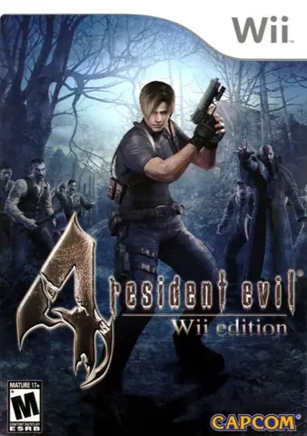
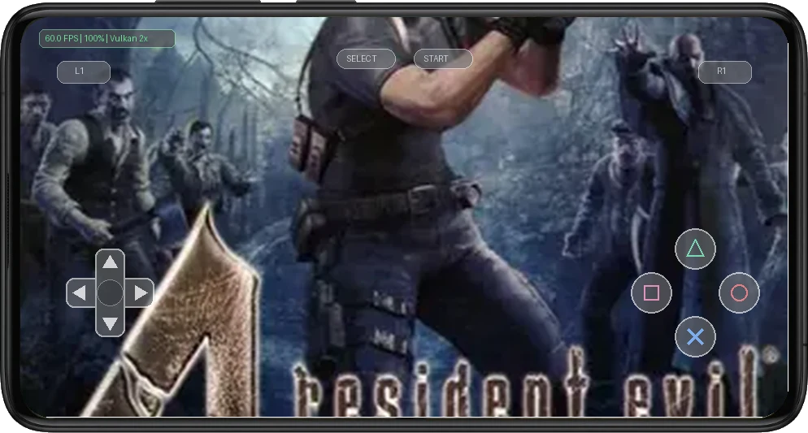
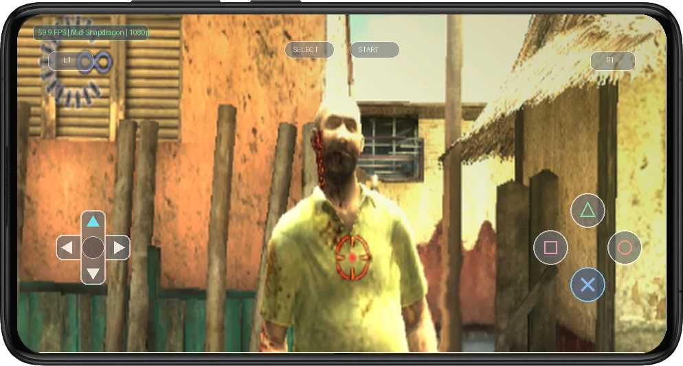

📱 Mobile Gameplay & Touch Controls in Action
Real-time emulation running with active on-screen touch controls on Android at 60 FPS.


1. Legacy & Historical Context
Resident Evil 4 pioneered psychological dread on the WII by pairing photorealistic pre-rendered backgrounds with real-time polygonal zombie models and spatial acoustic tension that pushed hardware limits.
On modern mobile devices, high-resolution rendering and geometry perspective correction eliminate original polygon swimming and texture warping, creating a pristine horror experience that looks stunning under OLED black levels.
2. Optimal Mobile Emulation Settings
To achieve an uncompromising 60 FPS experience with zero thermal throttling on modern Qualcomm Snapdragon processors (e.g., Snapdragon 778G, 8+ Gen 1, 8 Gen 2, and 8 Gen 3), apply the following tuned configuration inside Dolphin Emulator:
- Backend Renderer: Use the Vulkan backend with "Compile Shaders Before Starting" checked. This eliminates in-game shader compilation spikes when explosive particle effects detonate.
- Internal Resolution: Run at 2.5x native resolution (1080p) for high-framerate action. On flagship Snapdragon 8-series processors, pushing to 3x provides crisp broadcast-quality visuals.
- Texture Filtering & Upscaling: Force 16x Anisotropic Filtering in Graphic Enhancements, and ensure "Force Texture Filtering" is set to Bilinear to prevent distant terrain shimmer.
- Audio Driver & Latency: Configure Audio Engine to Cubeb with Audio Stretching activated and buffer size set to 20ms. This prevents pitch warping when loading new stages.
- CPU Multithreading & Sync: Enable "Dual Core" processing for CPU emulation. Keep "Store EFB Copies to Texture Only" active for high frame rates, except where CPU readbacks are explicitly needed.
3. Known Graphical Fixes & Emulation Patches
EFB Copy Readback Stutter & Missing Laser Sights
The Issue: Certain gameplay elements (such as targeting lasers or depth-of-field blur) require the GPU to copy framebuffers back to the CPU, causing severe FPS drops if unoptimized.
The Fix: In Dolphin Graphic Hacks, keep "Store EFB Copies to Texture Only" active, but uncheck "Fast Depth Calculation" if targeting lasers fail to appear.
Audio Crackle During Level Loading
The Issue: Disc streaming transitions can cause temporary sound buffer underruns.
The Fix: Set Audio Engine to "Cubeb" with buffer size at 20ms, and turn on "Audio Stretching" to maintain pitch accuracy.
4. Touch Controls vs. Bluetooth Gamepads
Navigating intense action sequences and camera panning in Resident Evil 4 via capacitive touch controls works reliably when using a customized on-screen layout. Placing the virtual thumbstick slightly closer to the lower screen edge and scaling action buttons to 110% ensures comfortable reach without obstructing on-screen visual hazards.
For extended gaming sessions and demanding boss encounters, snapping your smartphone into a USB-C telescopic gamepad (such as the Razer Kishi or GameSir G8) or syncing a Bluetooth PlayStation DualSense controller provides authentic tactile feedback. Physical analog sticks and textured shoulder bumpers eliminate thumb fatigue and grant flawless precision control.
5. Final Verdict & Review Score
Overall romstofun Score
Community Choice & Verified Playable
Ready to Play on Your Android Device?
Get the companion application on Google Play for one-tap controller profiles, optimal settings, and seamless emulation.
Get on Google Play ↗